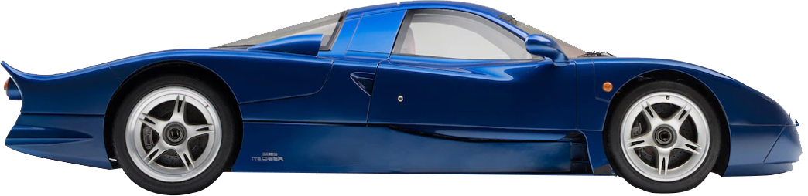
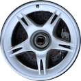

<div class="app">  
		
		
		
  <div class="city"></div>
  <div class="road"></div>
</div>

<style>

	.chakaLeft{
		width: 25px;
    position: fixed;
    top: 77%;
    z-index: 3;
    left: 48.1%;
	animation: chakaLeft 105ms linear infinite ;

	}

	.chakaRight{
		width: 25px;
    position: fixed;
    top: 77%;
    z-index: 3;
    left: 56.9%;
    animation: chakaRight 105ms linear infinite;
	}

	.car{
	width: 230px;
    height: auto;
    position: fixed;
    left: 45.8%;
    bottom: 19%;
    z-index: 2;    
	animation: jump 2s linear infinite ;
	}
* {
	 margin: 0;
	 padding: 0;
	 overflow: hidden;
}
 .app {
	 width: 100%;
	 height: 100vh;
	 background: url(https://e3.365dm.com/19/03/768x432/skynews-meteor-explosion-generic_4612421.jpg?20190318083957);
	 overflow-x: hidden;
	 background-repeat: no-repeat;
	 background-size: cover;
}
 .app .road {
	 height: 250px;
	 width: 500%;
	 background: url(road.jpg);
	 background-repeat: repeat-x;
	 position: absolute;
	 bottom: 0;
	 left: 0;
	 right: 0;
	 animation: road 20s infinite linear;
}
 .app .city {
	 animation: city 120s infinite linear;
	 height: 221px;
	 background-repeat: repeat-x;
	 position: absolute;
	 bottom: 250px;
	 left: 0;
	 right: 0;
	 width: 500%;
	 background: url('https://www.freepngimg.com/thumb/united_states/32042-5-los-angeles-transparent-image.png');
}

@keyframes jump {
	0%{
		transform: translateY(0px)
	}

	50%{
		transform: translateY(-2px)
	}

	0%{
		transform: translateY(0px)
	}
}


 @keyframes city {
	 0% {
		 transform: translateX(0px);
	}
	 100% {
		 transform: translateX(-3400px);
	}
}
 @keyframes road {
	 100% {
		 transform: translateX(-3400px);
	}
}

@keyframes chakaLeft{

	0%{
		transform: translateY(0px);
	}

	50%{
		transform: translateY(-1px);
	}

	100%{
		transform: translateY(0px) rotate(-360deg);
	}

}

@keyframes chakaRight{


50%{
	transform: translateY(-1px);
}

100%{
	transform: translateY(0px) rotate(-360deg);
}

}
 
</style>